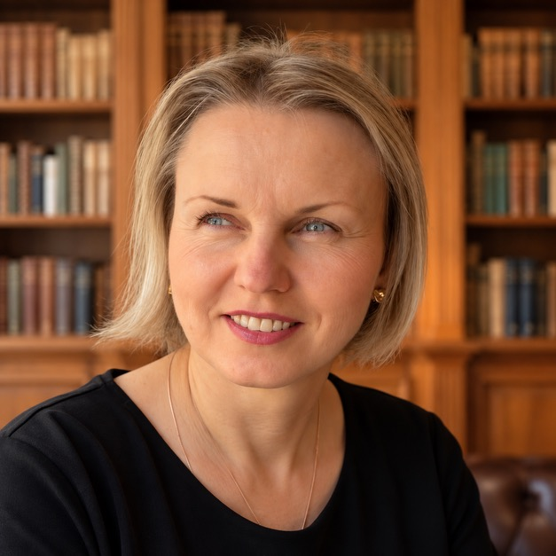
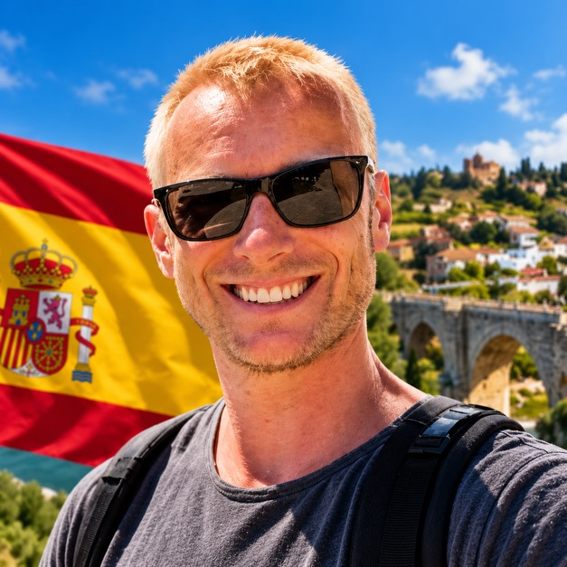

Какими путями вообще получают испанское гражданство
Código Civil описывает несколько разных механизмов, но для подавляющего большинства переехавших в Испанию реален только один из них:
- Por residencia (по резиденции) — основной путь для иммигрантов: нужно легально прожить в Испании определённое число лет. Именно этому варианту посвящена вся статья ниже
- De origen — по рождению, не касается тех, кто переехал уже взрослым
- Por opción — узкое право «выбрать» испанское гражданство, доступно отдельным категориям (например, детям испанца, оформившего гражданство после их рождения) — для нашей аудитории почти никогда не применимо
- Por carta de naturaleza — полностью дискреционное решение правительства по королевскому декрету для «исключительных обстоятельств» — не обычная иммиграционная процедура, а редкость для резонансных случаев
- Por posesión de estado — механизм исправления ошибки в Registro Civil для тех, кто добросовестно считал себя испанцем и действовал как испанец 10 лет на основании дефектной записи — не стандартный иммиграционный путь
Сколько лет резиденции нужно на самом деле
Общее правило — 10 лет легальной резиденции. Но закон (ст. 22 Código Civil) предусматривает сокращённые сроки для отдельных категорий:
| Срок | Кому |
|---|---|
| 5 лет | Люди со статусом беженца (asilo/refugiado) |
| 2 года | Граждане стран Латинской Америки, Андорры, Филиппин, Экваториальной Гвинеи, Португалии, а также сефарды |
| 1 год | Рождённые в Испании; состоящие в браке с испанцем/испанкой не менее 1 года на момент подачи; вдова/вдовец испанца; рождённые за границей у родителя или деда/бабушки, которые были испанцами «de origen»; находившиеся под опекой испанца или испанского учреждения 2+ года |
⚠️ Важно понять сразу. Ни Россия, ни Беларусь, ни Казахстан, ни Украина не входят ни в одну льготную категорию. Двухлетний срок актуален для стран Латинской Америки и нескольких других — не для стран СНГ. Реалистичный путь для абсолютного большинства читателей этой статьи — это общие 10 лет. Единственное практическое исключение — брак с испанцем/испанкой (1 год) или статус вдовы/вдовца испанского гражданина.
Что считается «легальной непрерывной резиденцией»
Формулировка в законе — residencia legal, continuada e inmediatamente anterior a la petición (легальная, непрерывная и непосредственно предшествующая заявлению). На практике из этого вытекает несколько важных следствий:
- Студенческая виза не считается вообще. Юридически это estancia (пребывание), а не residencia (резиденция) — время на студенческой визе не засчитывается в счёт 10 лет ни на один день. Отсчёт начинается только с момента перехода на настоящий вид на жительство — рабочий, non-lucrativa и так далее
- Non-lucrativa засчитывается как обычная резиденция — наравне с любым другим видом ВНЖ, если он поддерживался регулярно без разрывов
- Короткие, обоснованные поездки за границу не прерывают срок — закон не устанавливает единого числа дней в год (в отличие от правил для ПМЖ, см. ниже), вопрос решается по факту: сохраняли ли вы центр жизни в Испании. Но частые или длительные выезды реально могут стать предметом отдельной проверки — избегайте затяжных отлучек ближе к моменту подачи
Два экзамена, которые нужно сдать
Для подтверждения «достаточной степени интеграции» нужны два разных экзамена Instituto Cervantes:
- DELE A2 (или выше) — экзамен на знание испанского языка, стоимость в Испании — €138. Освобождены только граждане испаноязычных стран (Аргентина, Мексика, Куба и другие) — ни одна из четырёх стран СНГ в этот список не входит, экзамен обязателен
- CCSE (Conocimientos Constitucionales y Socioculturales de España) — 25 вопросов о конституции, истории и культуре Испании, нужно ответить правильно на 15. Стоимость — €85, включает две попытки сдачи. Сертификат действует 4 года
От обоих экзаменов освобождены несовершеннолетние и люди с судебно подтверждённым изменением правоспособности (недееспособностью) — для всех остальных взрослых заявителей из России, Беларуси, Казахстана и Украины оба экзамена обязательны без исключений.
Справка об отсутствии судимости — порядок действий важен
Нужна справка не только от Испании, но и от страны происхождения (а как правило — от любой страны, где заявитель проживал в предшествующие годы). Порядок действий принципиален:
- Сначала получить оригинал справки в стране происхождения
- Затем апостилировать её там же — Россия, Беларусь, Казахстан и Украина участники Гаагской конвенции об апостиле, полная легализация не требуется
- И только после апостиля — сделать присяжный перевод на испанский, причём переводить нужно вместе с текстом самого апостиля, а не только исходный документ
Срок действия справки ограничен — на практике это обычно 3–6 месяцев, но единой официальной цифры для всех случаев нет: уточняйте актуальное требование непосредственно перед подачей, а не ориентируйтесь на чужой опыт прошлых лет.
Главный вопрос — придётся ли отказываться от своего гражданства
По испанскому закону (ст. 23 Código Civil) получение испанского гражданства требует формального отказа от прежнего — это часть церемонии принятия клятвы. Исключение — страны, с которыми у Испании заключена конвенция о двойном гражданстве: в основном это страны Латинской Америки, а также Андорра, Филиппины, Экваториальная Гвинея и Португалия. России, Беларуси, Казахстана и Украины в этом списке нет — формально заявителям из этих стран нужно подписать отказ от прежнего гражданства.
Но здесь важно разделить два разных вопроса: что требует испанская процедура на бумаге, и что реально происходит с гражданством в стране происхождения. У Испании нет механизма, который бы проверял или добивался фактической потери гражданства где-то за пределами страны — вся дальнейшая судьба вашего прежнего гражданства зависит исключительно от законов самой этой страны, а не от испанской декларации об отказе. И здесь ситуация у всех четырёх стран разная:
Россия
Россия не запрещает двойное гражданство и не лишает человека российского гражданства автоматически при получении другого. Но закон обязывает уведомить российские органы (МВД, ранее ФМС) о наличии второго гражданства или вида на жительство в течение 60 дней. Несвоевременное или неправильно оформленное уведомление — административное нарушение (штраф 500–1000 ₽), а полное отсутствие уведомления в срок — уже уголовное правонарушение с 2014 года: штраф до 200 000 ₽, в размере дохода за период до года, либо до 400 часов обязательных работ.
В феврале 2026 МИД России подготовил поправки о дополнительной обязательной консульской регистрации для россиян, постоянно проживающих за границей — на момент публикации статьи это законопроект, а не принятый закон, но тенденция к ужесточению контроля заметна.
Беларусь
Двойное гражданство конституционно и законодательно запрещено. Формально закон однозначен, хотя вопрос того, как и когда это отслеживается на практике для конкретного человека — уже другая история.
Казахстан
Двойное гражданство запрещено Конституцией (ст. 10) и Законом о гражданстве (ст. 3). Сейчас это административное правонарушение — штраф (до ~300 МРП) или административное выдворение. Осенью 2025 года в парламенте обсуждалась инициатива сделать это уголовным правонарушением — на момент публикации это предложение депутата, а не принятый закон, но направление движения стоит иметь в виду при планировании.
Украина
Здесь ситуация самая свежая и легче всего перепутывается. Закон о множественном гражданстве (4502-IX), подписанный президентом 15 июля 2025 года, действительно вступил в силу 16 января 2026 года — но только для гражданств стран из отдельного перечня, который утверждает Кабинет министров. На дату публикации статьи в этот перечень входят: США, Канада, Германия, Польша и Чехия. Испании в этом списке пока нет. Это означает, что для гражданина Украины, получающего испанское гражданство прямо сейчас, реформа ничего не меняет — формальная испанская процедура всё равно предполагает отказ от украинского гражданства, а украинский закон пока не защищает именно эту пару стран. Если Испанию добавят в перечень позже, ситуация может измениться — но ориентироваться на это заранее не стоит.
Как подать документы — по шагам
- Шаг 1 — соберите пакет документов. Справки о резиденции, апостилированная и переведённая справка об отсутствии судимости, сертификаты DELE A2 и CCSE, документы о семейном положении при необходимости
- Шаг 2 — оплатите пошлину. Modelo 790, код 026 — сумма 104,05 €, оплачивается один раз до подачи, через банк или онлайн, с получением номера NRC
- Шаг 3 — подайте заявление электронно. Вся процедура ведётся через электронную sede Ministerio de Justicia. Нужен цифровой сертификат (FNMT), DNIe или система Cl@ve, а также установленное на компьютере приложение AutoFirma для подписания документов
- Шаг 4 — ждите решения. Законный максимум — 1 год с момента регистрации дела
⚠️ Молчание ведомства здесь работает не так, как в большинстве других испанских процедур. Для гражданства по резиденции действует silencio administrativo negativo — отрицательное молчание (Real Decreto 1004/2015, ст. 11.3). Если за год решения нет, заявление автоматически считается отклонённым. Это не окончательный отказ по существу вашего дела, а формальное основание подать recurso contencioso-administrativo (судебную жалобу) — именно так добиваются реального рассмотрения дела, когда министерство просто не успевает его обработать, и юристы описывают этот путь как обычную и действующую практику, а не крайнюю меру.
Официальный срок — год, но реальность отличается. На конец 2025 года на рассмотрении находилось более 256 000 заявлений, а только за первый квартал 2026 года подано ещё 68 456 новых — очередь реальна и статистически подтверждена. Министерство внедряет автоматизацию обработки, и у полностью готовых, корректно оформленных электронных дел результат иногда приходит за 3–6 месяцев, но типичный реалистичный срок в 2026 году — 12–18 месяцев, а не официальный год. До активной цифровизации процедуры отдельные дела растягивались и на годы — прогресс есть, но очередь остаётся долгой.
После одобрения — ещё не конец процесса
Одобрение гражданства — это не автоматическое получение паспорта. Дальше нужно:
- Принести клятву (jura o promesa) верности королю и Конституции — либо перед судьёй/секретарём Registro Civil по месту жительства, либо перед нотариусом (этот вариант действует с Ley 20/2011 и обычно быстрее — запись к нотариусу дают за несколько дней, а очередь в Registro Civil может тянуться месяцами)
- Успеть сделать это в течение 180 календарных дней с момента уведомления об одобрении
⚠️ Пропустите 180-дневный срок — решение аннулируется (caduca), и весь процесс нужно начинать заново с нуля, включая повторную подачу документов и ожидание решения. Это один из самых обидных способов потерять год(ы) ожидания — запишитесь на клятву сразу после уведомления об одобрении, не откладывая.
Только после клятвы и внесения записи в Registro Civil (на основании которой выдаётся испанский аналог свидетельства о рождении) можно подавать на DNI и испанский паспорт — не раньше.
ПМЖ (larga duración) — это не то же самое, что гражданство
Многие путают два разных статуса. Residencia de larga duración (аналог ПМЖ) оформляется после 5 лет легальной непрерывной резиденции (с допустимыми суммарными отлучками не больше примерно 10 месяцев за весь этот период) и даёт бессрочное право жить и работать в Испании — но не испанский паспорт и не право голоса на национальных выборах.
Это отдельный, самостоятельный статус, а не обязательная ступень перед гражданством: 5-летний и 10-летний счётчики идут параллельно и независимо с самого начала легальной резиденции. У большинства людей, которые доходят до 10 лет и подают на гражданство, larga duración к этому моменту уже оформлена просто попутно — но это не формальное требование для самой подачи на гражданство.
Кто может помочь
Процедура во многом состоит из бюрократии с документами, апостилями, переводами и подачей в нужное ведомство — именно этим в Испании занимается gestor administrativo, отдельная регулируемая профессия на стыке бухгалтера и юриста. Для представления в суде (если дело дойдёт до recurso contencioso-administrativo при отрицательном молчании ведомства) нужен уже отдельно нанятый адвокат — но саму подготовку и подачу заявления на гражданство обычно ведёт именно гестор:

Residencias y nacionalidad — сопровождение ВНЖ, ПМЖ и гражданства — прямо среди основных услуг. Официально зарегистрирована в Colegio de Gestores Administrativos de Alicante, номер проверяется в открытом реестре.
Перейти к профилю →Сопровождение по НИЕ, ТИЕ, прописке и документам — поможет понять, куда двигаться дальше, даже если заявления на гражданство не основная услуга.
Перейти к профилю →
Специализируется на оформлении ВНЖ, а не на заявлениях на гражданство как таком — но на своей странице сам отмечает путь «ПМЖ → гражданство» как следующий шаг после визы, так что стоит спросить, сопровождает ли он и эту стадию.
Перейти к профилю →Частые вопросы
Для граждан России, Беларуси, Казахстана и Украины — 10 лет легальной непрерывной резиденции. Сокращённые сроки (2 года и 1 год) действуют только для гражданств стран Латинской Америки, Андорры, Филиппин, Экваториальной Гвинеи, Португалии и сефардов — ни одна из четырёх стран СНГ в этот список не входит. Единственное реальное исключение для нашей аудитории — брак с испанцем/испанкой (1 год) или статус вдовы/вдовца испанского гражданина.
Нет. Студенческая виза в Испании юридически — это estancia (пребывание), а не residencia (резиденция), и в счёт 10-летнего срока не засчитывается вообще. Отсчёт начинается только с момента, когда статус меняется на настоящий вид на жительство — рабочий, non-lucrativa и так далее.
Формально — да, Испания требует подписать отказ от прежнего гражданства при получении испанского, если страна происхождения не входит в список стран с конвенцией о двойном гражданстве (туда входят в основном страны Латинской Америки, Андорра, Филиппины, Экваториальная Гвинея и Португалия — не Россия, Беларусь, Казахстан и Украина). На практике же у Испании нет механизма проверить или добиться фактической потери гражданства в другой стране — всё зависит от законов самой страны происхождения, и здесь ситуация у всех четырёх разная.
Россия не запрещает двойное гражданство и не лишает человека российского гражданства автоматически при получении другого. Но закон обязывает уведомить российские органы (МВД) о наличии второго гражданства в течение 60 дней — нарушение срока уведомления является уже не административным, а уголовным правонарушением (штраф до 200 000 рублей, доход за период до года или до 400 часов обязательных работ).
Закон о множественном гражданстве Украины (4502-IX) действительно вступил в силу 16 января 2026 года, но только для гражданств стран из отдельного перечня, утверждённого Кабинетом министров — сейчас туда входят США, Канада, Германия, Польша и Чехия. Испании в этом списке пока нет, поэтому для гражданина Украины, получающего испанское гражданство, формальная ситуация остаётся прежней — ожидается отказ от украинского гражданства по испанской процедуре.
По закону Беларуси — нет, двойное гражданство конституционно запрещено. Как именно и когда это отслеживается на практике — отдельный вопрос, но формально закон однозначен.
Двойное гражданство в Казахстане запрещено Конституцией (ст. 10) и Законом о гражданстве — сейчас это административное нарушение со штрафом или депортацией, но осенью 2025 года в парламенте обсуждалось предложение сделать это уголовным правонарушением. Пока это только обсуждаемая инициатива, не принятый закон, но тенденцию стоит иметь в виду.
Два: DELE A2 (испанский язык, стоимость в Испании — €138) и CCSE (конституционные и социокультурные знания об Испании — 25 вопросов, нужно 15 правильных, стоимость €85, включает две попытки, сертификат действует 4 года). Для граждан России, Беларуси, Казахстана и Украины оба экзамена обязательны — освобождение от DELE A2 действует только для граждан испаноязычных стран.
Госпошлина (Modelo 790, код 026) — 104,05 €, оплачивается один раз перед подачей. Отдельно оплачиваются экзамены DELE A2 (€138) и CCSE (€85), и апостиль с присяжным переводом справки об отсутствии судимости из страны происхождения — сумма зависит от объёма документов.
Законный максимум — 1 год с момента регистрации дела в системе министерства. На практике для полностью готового и корректно поданного электронного дела реалистичный срок в 2026 году — 12–18 месяцев, хотя у хорошо подготовленных дел встречается и 3–6 месяцев. На конец 2025 года на рассмотрении находилось более 256 000 заявлений, и только в первом квартале 2026 подано ещё 68 456 новых — очередь реальна.
В отличие от большинства испанских административных процедур, здесь действует silencio administrativo negativo — отрицательное молчание. Если за год решения нет, заявление считается отклонённым по умолчанию. Это не окончательный отказ по существу дела, а основание подать recurso contencioso-administrativo (судебную жалобу), чтобы добиться реального рассмотрения — юристы называют этот путь обычной и действующей практикой, а не крайней мерой.
Нужно принести клятву (jura) верности королю и Конституции — перед судьёй Registro Civil или перед нотариусом — в течение 180 календарных дней с момента уведомления об одобрении. Пропустите срок — решение аннулируется (caduca), и весь процесс нужно начинать заново. Только после клятвы и внесения записи в Registro Civil можно подавать на испанский DNI и паспорт.
Нет, совсем другой статус. Larga duración оформляется после 5 лет легальной резиденции и даёт бессрочное право жить и работать в Испании, но не испанский паспорт и не право голоса. Это отдельный, более ранний статус — не обязательный шаг перед подачей на гражданство через 10 лет, а параллельный процесс, который у большинства просто получается попутно.